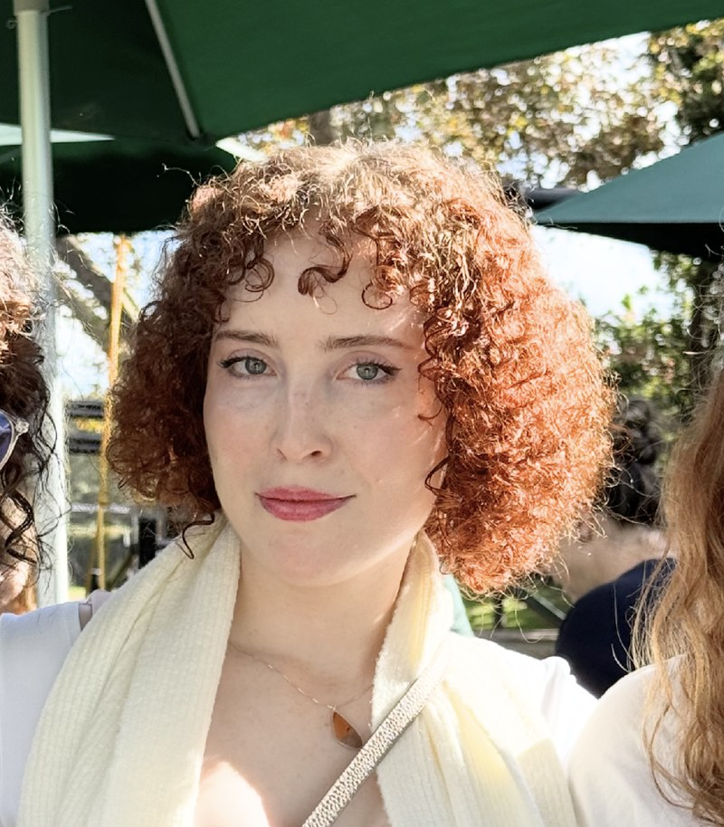
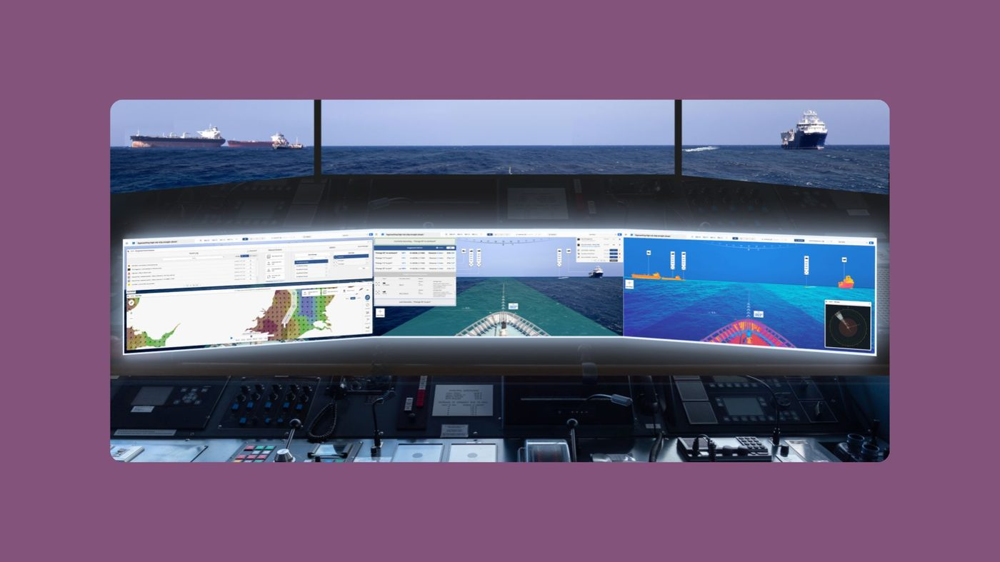
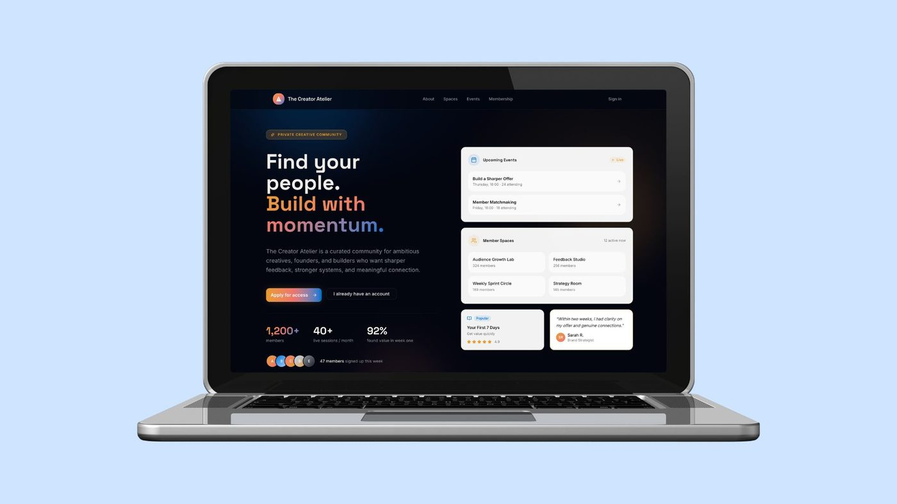
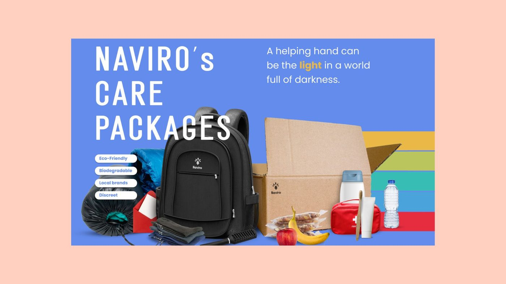
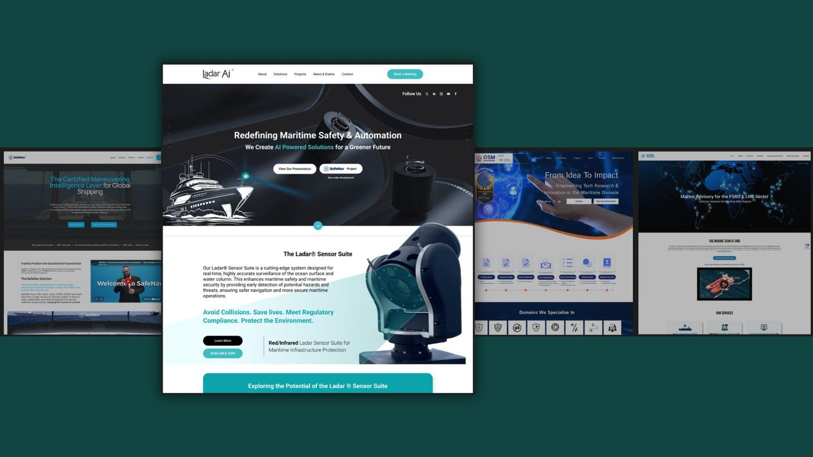
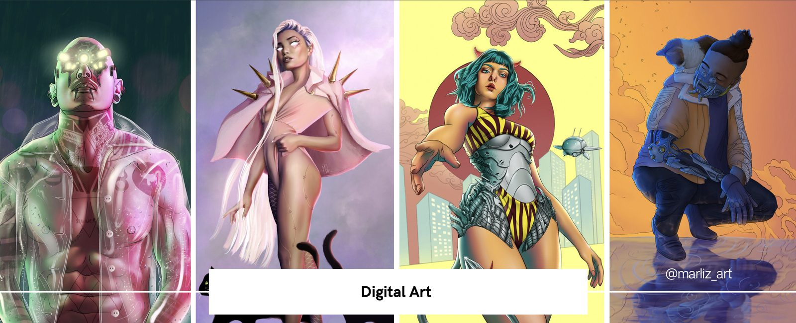
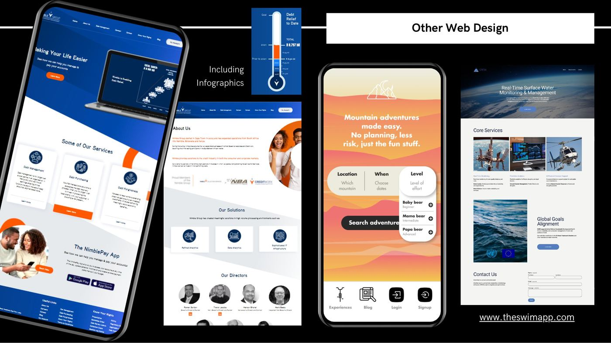
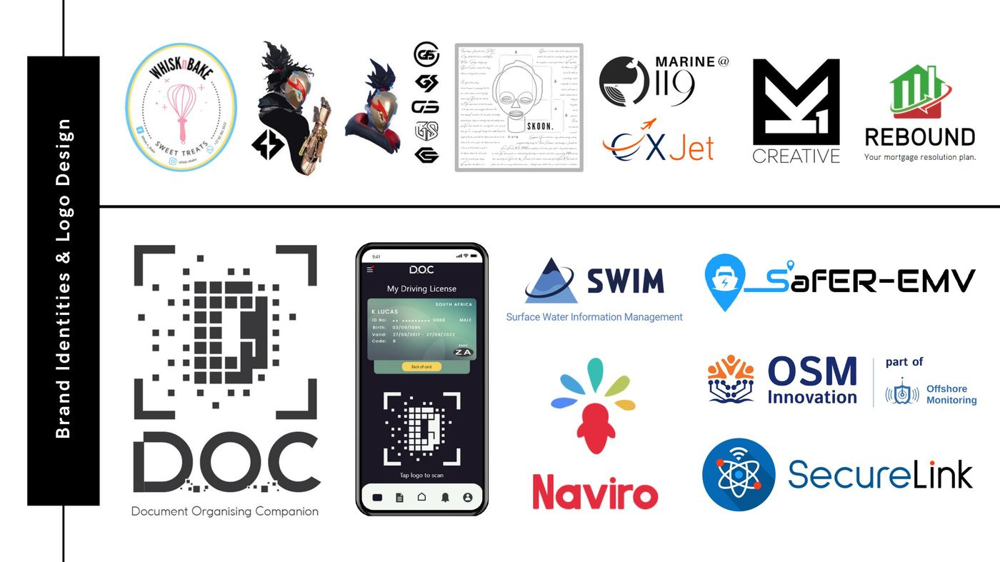

Product Designer · UI/UX & Product Management
6+ years designing, owning, and managing complex, high-stakes B2B and AI-enabled products from discovery through delivery.

About
I specialise in designing and managing complex, high-stakes B2B SaaSstrong> products, particularly where AI, trust, and explainability intersect. Most recently, I led UI/UX and product for SafeNav, a safety-critical AI decision-support platformstrong> for maritime collision avoidance, from an EU/UKRI-funded R&D project through to commercial spinout.
My background in animation and storywriting gives me a different kind of creative intuitionstrong>. I think in flows, narratives, and systemsstrong> rather than just screens. I'm experienced working across distributed, cross-cultural remote teamsstrong>, partnering closely with engineering and stakeholdersstrong> to ship scalablestrong>, enterprise-grade workflows.
I'm now looking for my next challenge: a remote product design or product management role where I can bring discipline, empathy, and momentum to complex problems.
Selected work

3-year UKRI/EU-funded B2B SaaS platform. End-to-end UI/UX and product leadership from R&D through commercial spinout with 12 global partners.

Training exercise demonstrating AI-accelerated concept development. LLM-powered research into a vibe-coded, credible MVP in days.

End-to-end brand identity, pitch deck, and product design for a non-profit focused on transparent, strategic, community-driven impact.

Full brand identity and website redesign across four related maritime-tech companies. Identity, positioning, content, and implementation oversight.

Character design, concept art, and illustration. Sharpens visual thinking, storytelling, and attention to detail.

Fintech, outdoor adventure, water management, and more. Responsive web design, UI/UX mockups, infographics.

Logo and brand identity across fintech, maritime-tech, social impact, and creative studios.
Capabilities
Fast, self-directed learner - recently self-taught agentic coding workflows